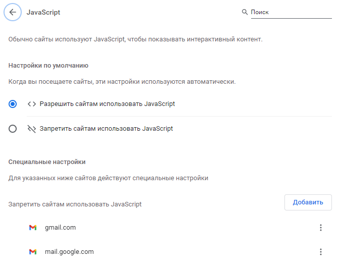
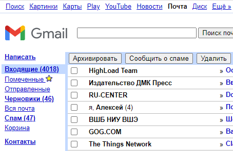

Начиная с какого-то момента, Google отключил возможность переключаться на базовую HTML-версию почтового интерфейса GMail. Пропала сама ссылка переключения на базовую версию.
Однако, новомодный интефейс почты обладает многими недостатками, один из которых - это невозможность работать с "сырым" текстом письма, как это происходит в обычном многострочном текстовом поле ввода <textarea> стандарта HTML. Из-за этого скопированный из письма текст в новом интерфейсе содержит некоторое форматирование, и при вставке в другие программы это форматирование пытается примениться с, зачастую, неожиданным качеством итогового результата. Справедливо и обратное: форматированный вставляемый текст Gmail пытается адаптировать под собственное форматирование с частичным сохранением исходного, и получается не очень. Приходится очищать форматирование, или пропускать текст через text-only редакторы, что занимает лишнее время. Что делать?
Даже в 2021 г. существует метод переключиться на базовый HTML интерфейс. Для этого надо проделать следующую последовательность действий.
Действия для включения старого HTML-интерфеса почты GMail
1. В настройках браузера временно отключить JavaScript для доменов mail.google.com и gmail.com. Для Google Chrome это делается так:

2. Перезагрузить браузер.
3. Зайти на сайт gmail.com, и в результате вместо новомодного интерфейса будет написано сообщение:
Чтобы использовать Gmail в стандартном режиме, необходимо включить JavaScript. Возможно, JavaScript отключен или не поддерживается вашим браузером. Включите JavaScript в настройках браузера и повторите попытку.
Чтобы загрузить базовую HTML-версию Gmail, для которой не требуется JavaScript, нажмите здесь.
Чтобы просматривать Gmail на мобильном устройстве, нажмите здесь.
4. Кликнуть на ссылку в строке "Чтобы загрузить базовую HTML-версию Gmail, для которой не требуется JavaScript...", и будет открыт старый интерфейс почты Gmail:

5. Удалить временно отключенные домены из списка доменов с запрещенным JavaScript и перезагрузить браузер. Старый интерфейс гуглпочты останется и продолжит работать.